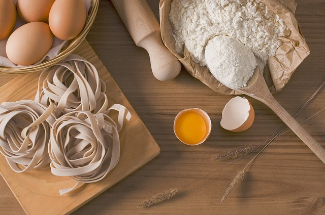

selbstgemachte Pasta
| 500 | gr Hartweizengries |
| 2 | Eier |
| 75 | ml Wasser |
Zubereitung
Den Hartweizengries und die 2 Eier mit dem Wasser vermengen bis der Teig nicht mehr klebrig ist und problemlos durch die Nudelmaschine gelangt
Danach den Teig 10-15 Minuten ruhen lassen
Den Teig mit der Hand nochmal Kneten und in eine längliche dicke Wurst rollen
Nun schneidet man etwa Ei große Stücke herunter und rollt diesen durch die Nudelmaschine bis der Teig „Ploppt“
Die Nudeln danach mit der Nudelmaschine oder dem Messer schneiden
Die geschnittenen Nudeln nun in kochendes gesalzenes Wasser hineingeben und kochen lassen